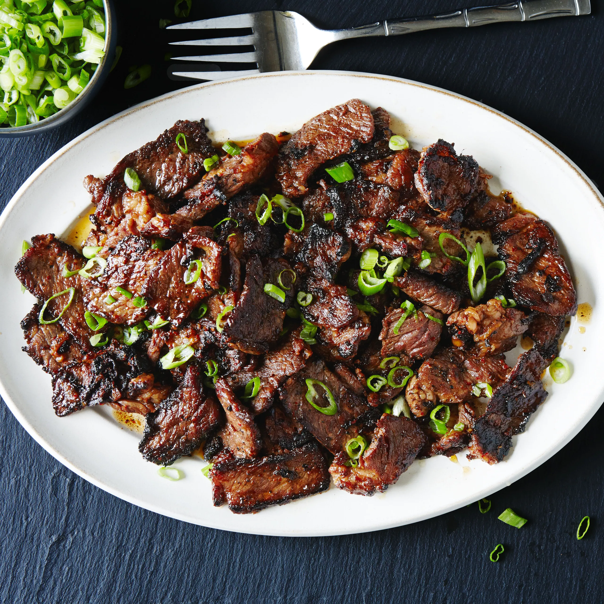

Bulgogi Beef

Description
Bulgogi, also known as Korean BBQ beef, is a dish marinated thinly cut steak that is grilled and usually served with rice but still makes a great dish by itself
Ingredients
- Steak
- Soy Sauce
- Sugar
- Green Onion and Garlic
- Sesame Seeds
- Sesame Oil
- Pepper
Directions
Marinate the Steak
- Combine the ingredients (except the stake) in a bowl, and whisk until blended
- Pour the marinade over the stake - make sure to cover all the meat
- Cover the bowl and leave the beef to marninate in the fridge for an hour
Grill the Steak
- Prepare lightly oiled grill set to high heat
- Cook beef until it's charred and completely cooked through (This should take about 1-2 minutes )